Мерч
Фирменная коллекция одежды и аксессуаров: худи, футболки, кепки, стикеры с символикой лаборатории.
Чем вдохновлялась
Коллекция вдохновлена techwear-культурой, японской эстетикой и образами будущего. Функциональные силуэты, многослойность и минимализм сочетаются с визуальным языком киберпанка — масками, символами и технологичными деталями.
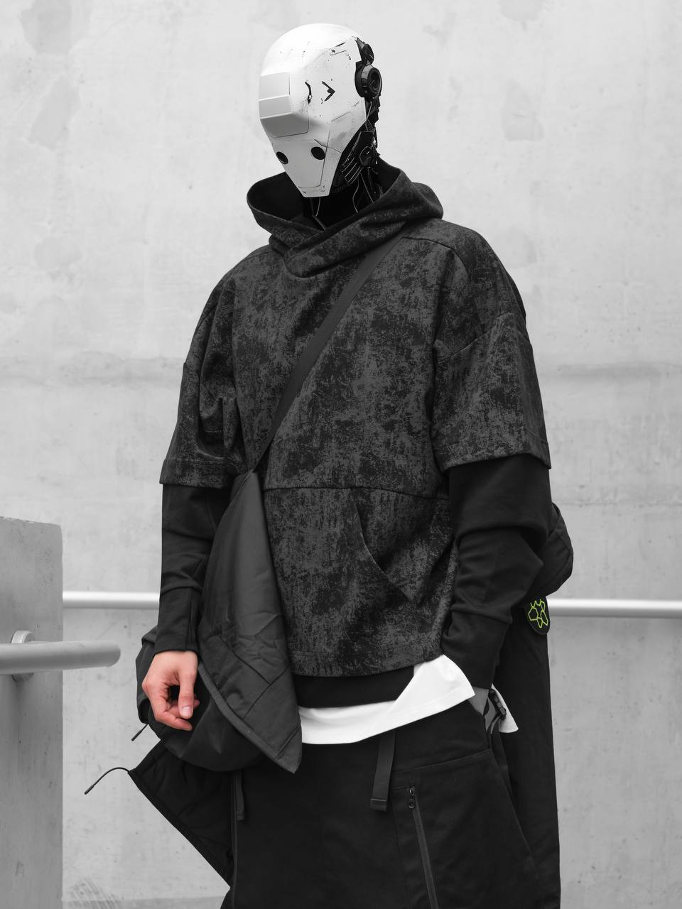
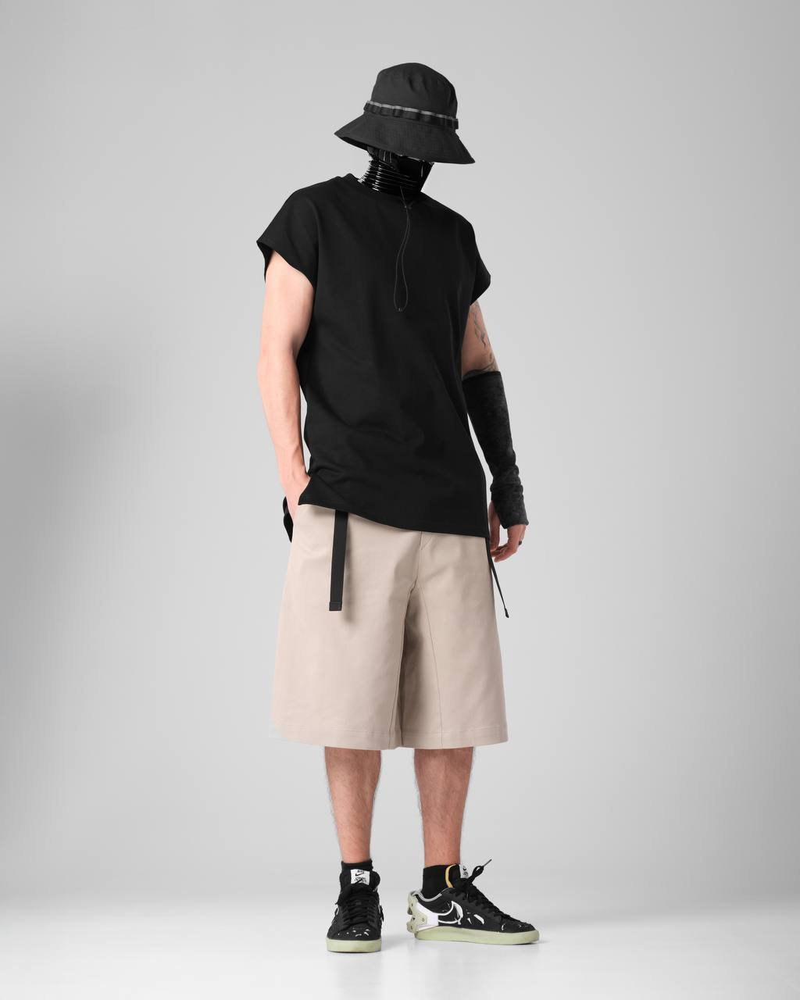
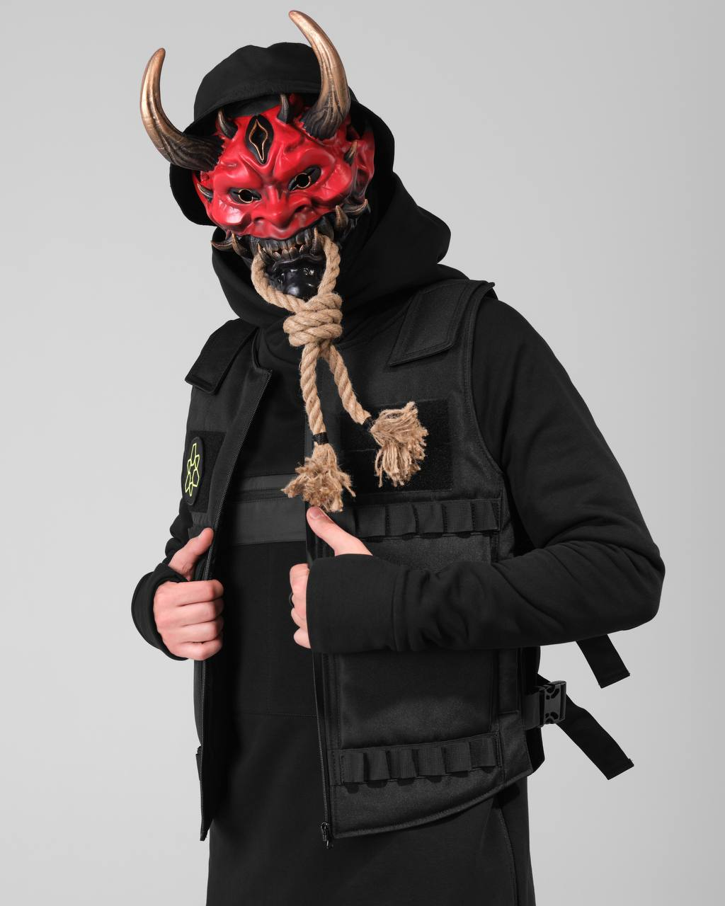
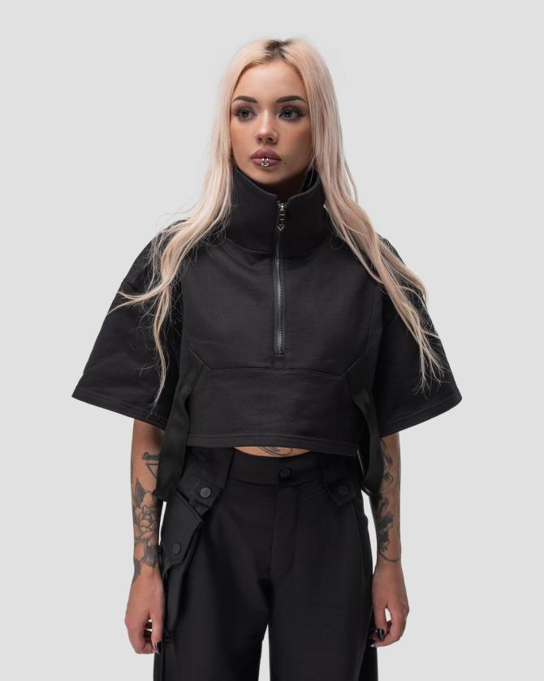
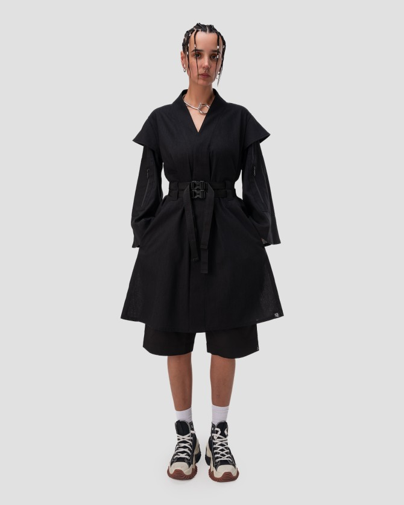
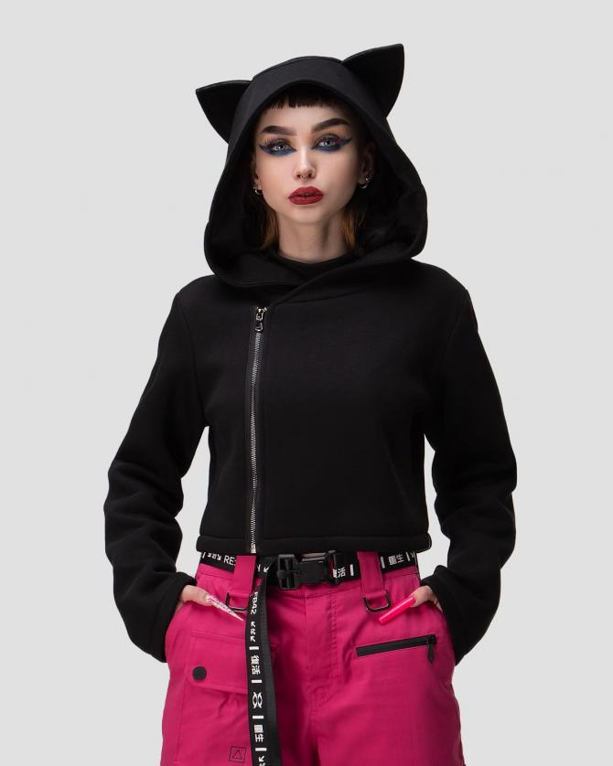
Robotics Future Lab — это синтез технологий и культурного кода Востока.
Коллекция вдохновлена пересечением киберпанка, японской эстетики и инженерной философии будущего.
В основе дизайна — контраст:
- ●структурная геометрия и текучие формы,
- ●механика и органика,
- ●функциональность и выразительность.
Графика переосмысливает традиционные мотивы — волны, журавля, символы будущего — через призму цифрового мира и робототехники. Каждый элемент — от силуэта до принта — работает как часть единой системы, формируя визуальный язык бренда.
Это не просто одежда — это интерфейс между человеком и будущим.
Концепт-арты
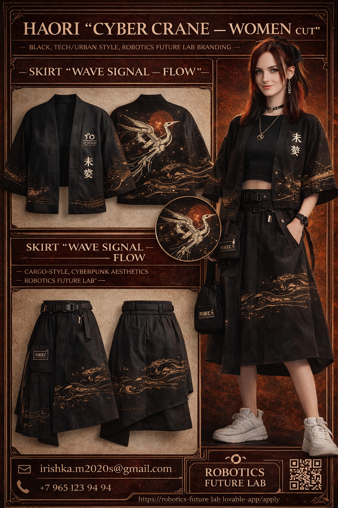
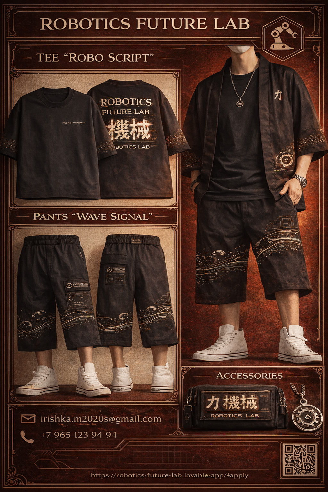
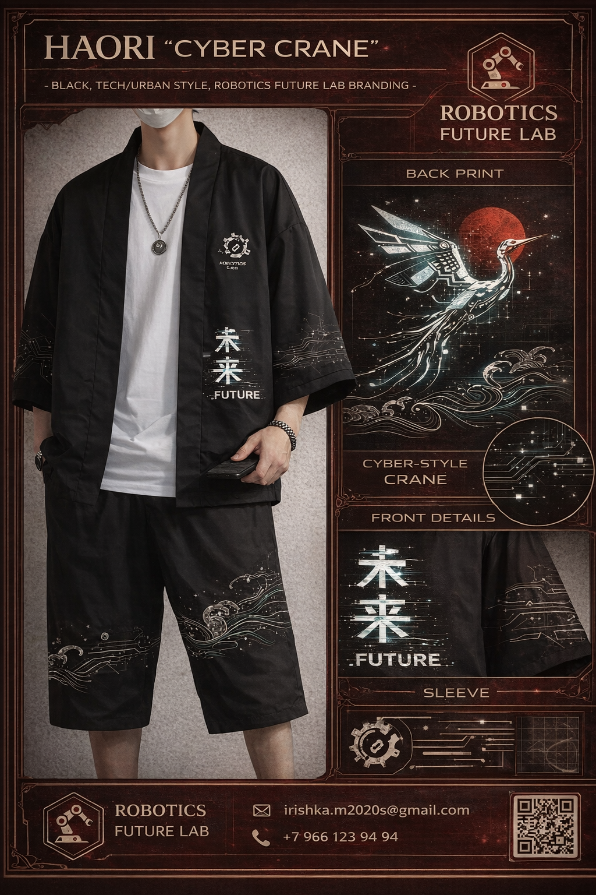
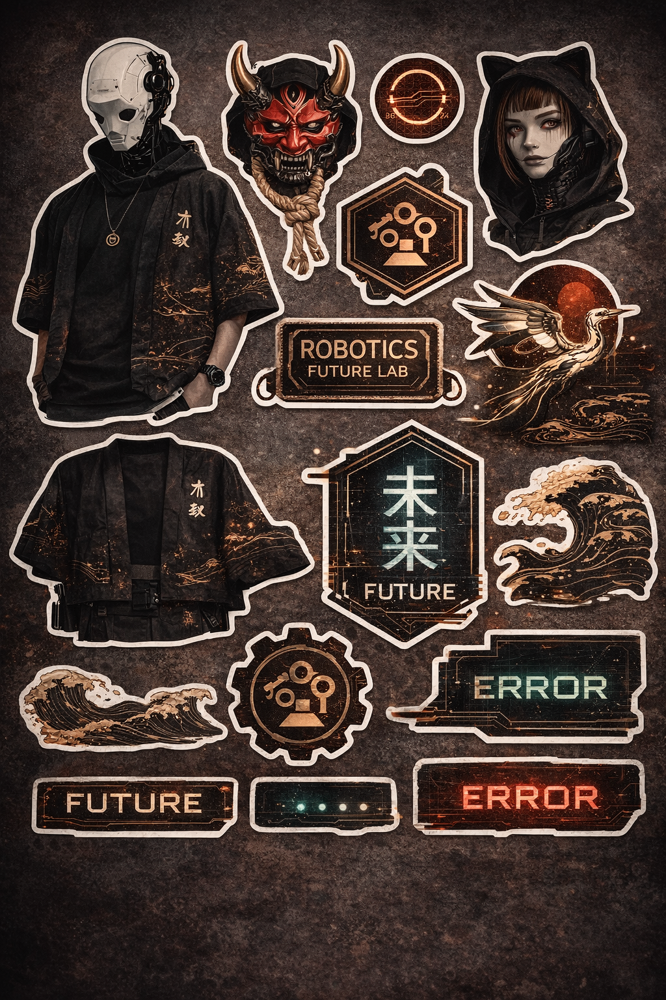
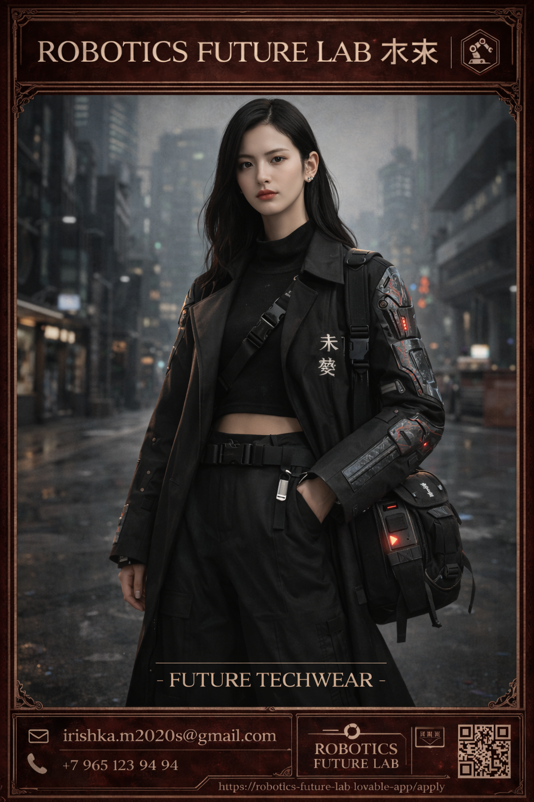
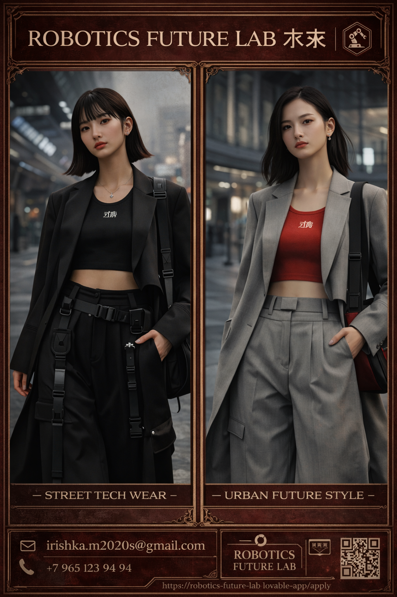